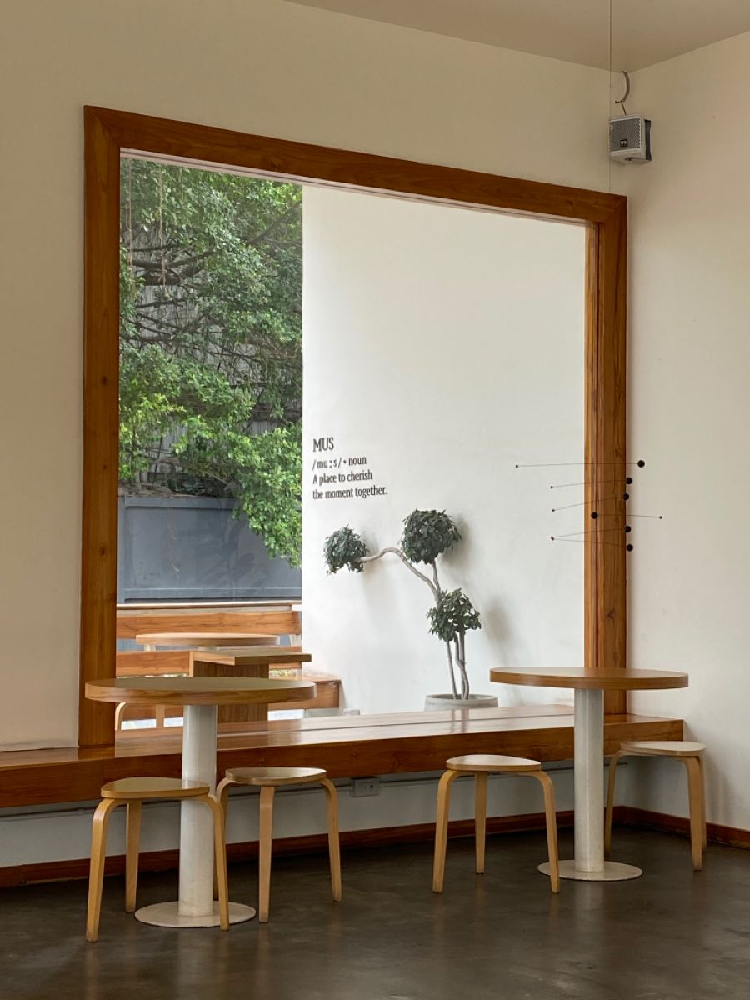
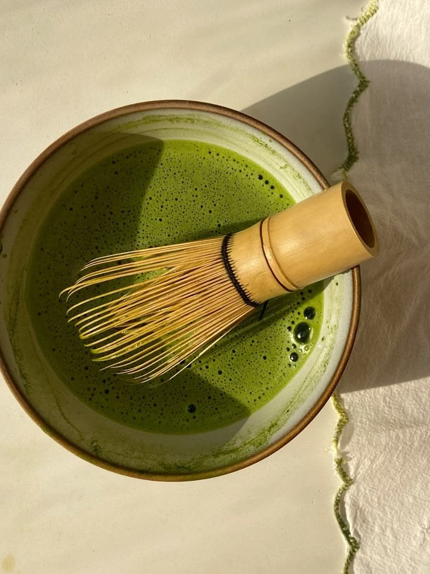
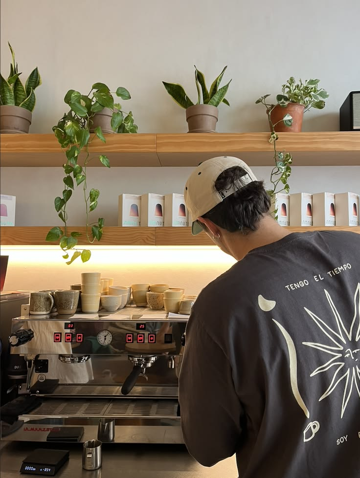
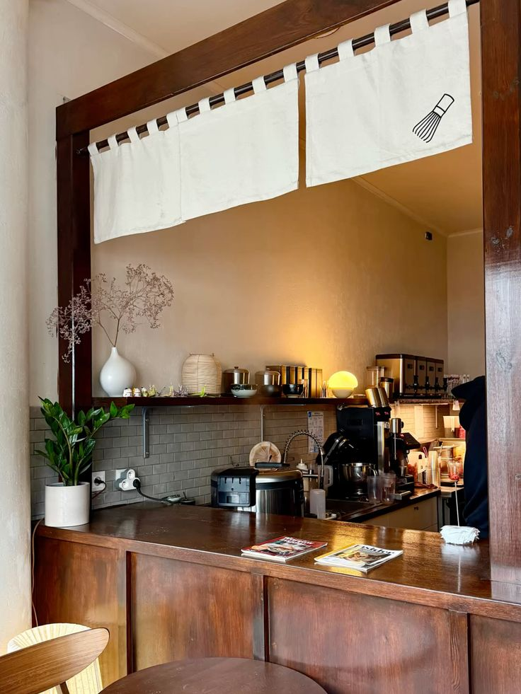
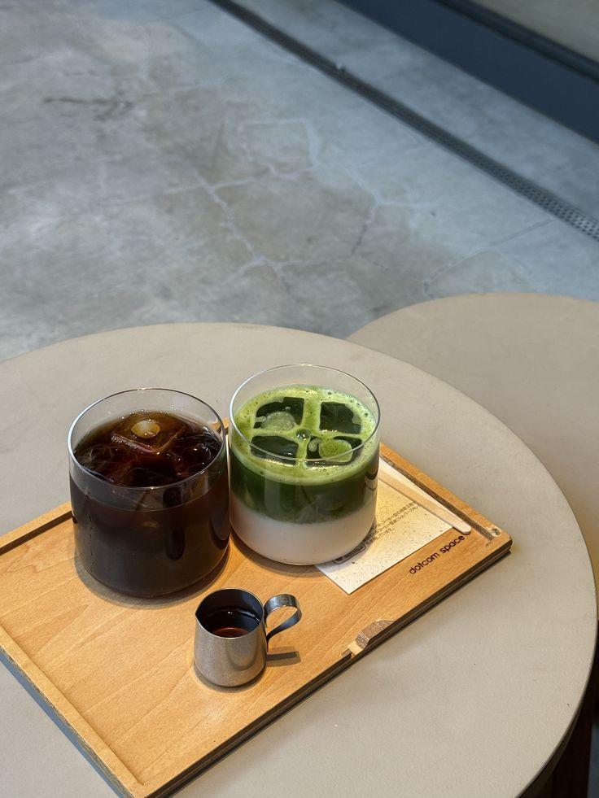
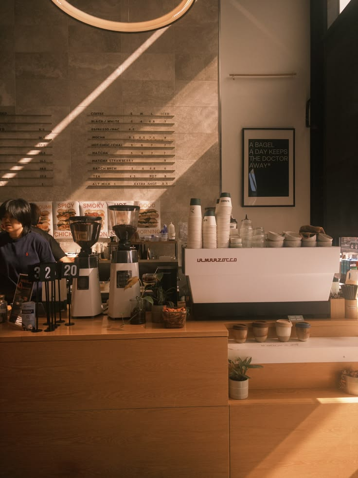
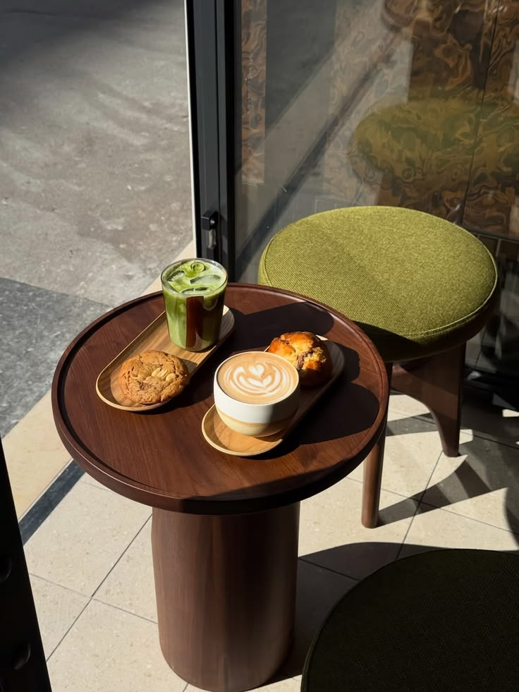
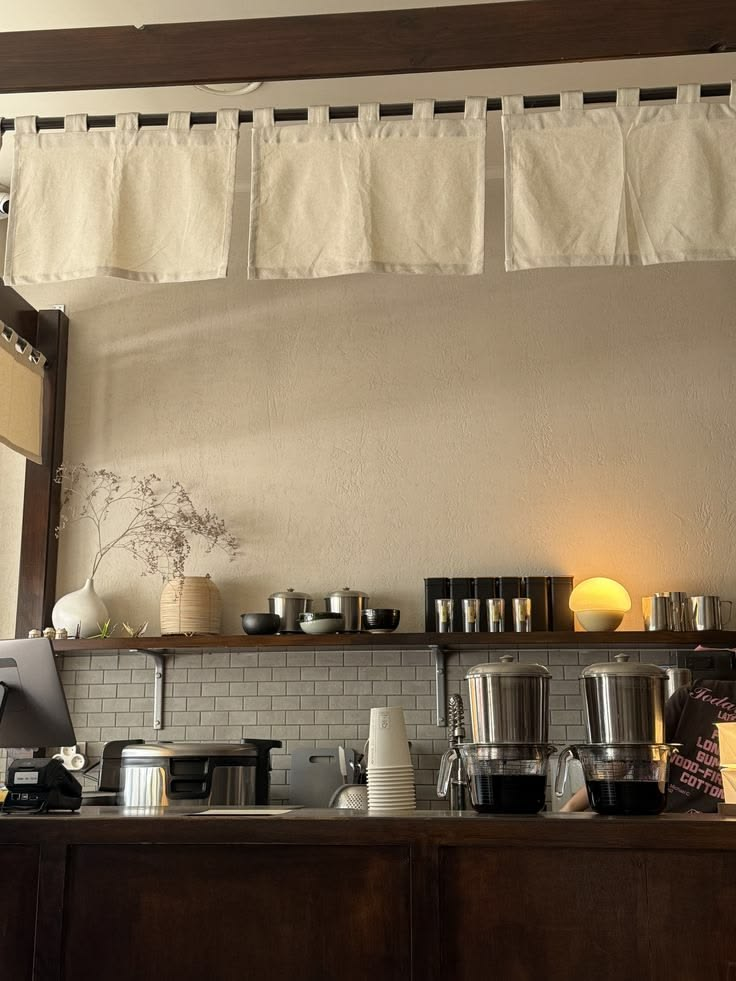
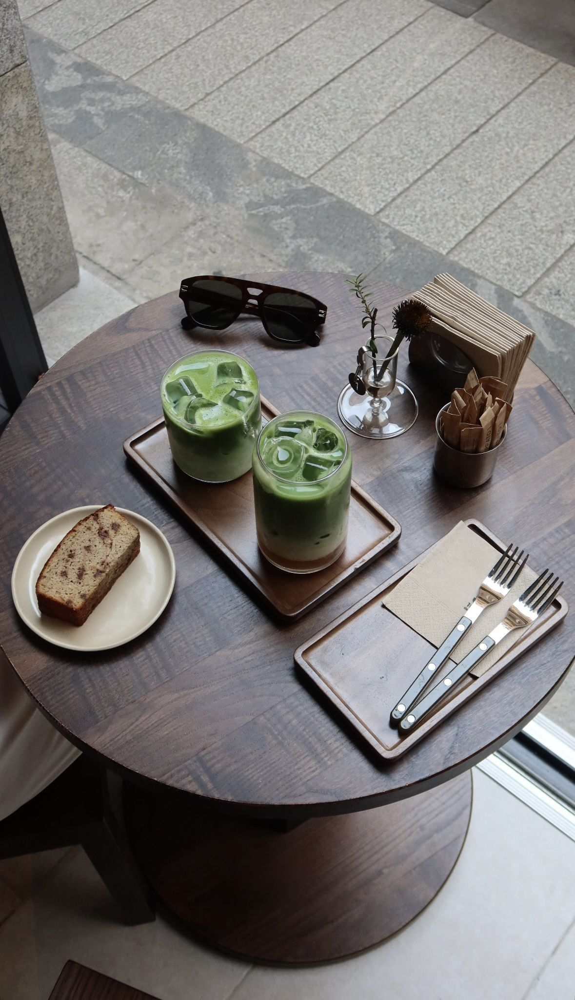

Gallery
Light, wood, and the occasional cup.
A few frames from the room, the bar, and the table by the window. Nothing staged; this is what a slow morning here tends to look like.
-

The window seats -

Matcha, whisked to order -

On the bar -

Under the noren -

Iced, for the afternoon -

Four o'clock light -

Table for one -

Morning, before opening -

Matcha and banana bread
The best view is still from the window seat. Come and see it in person.